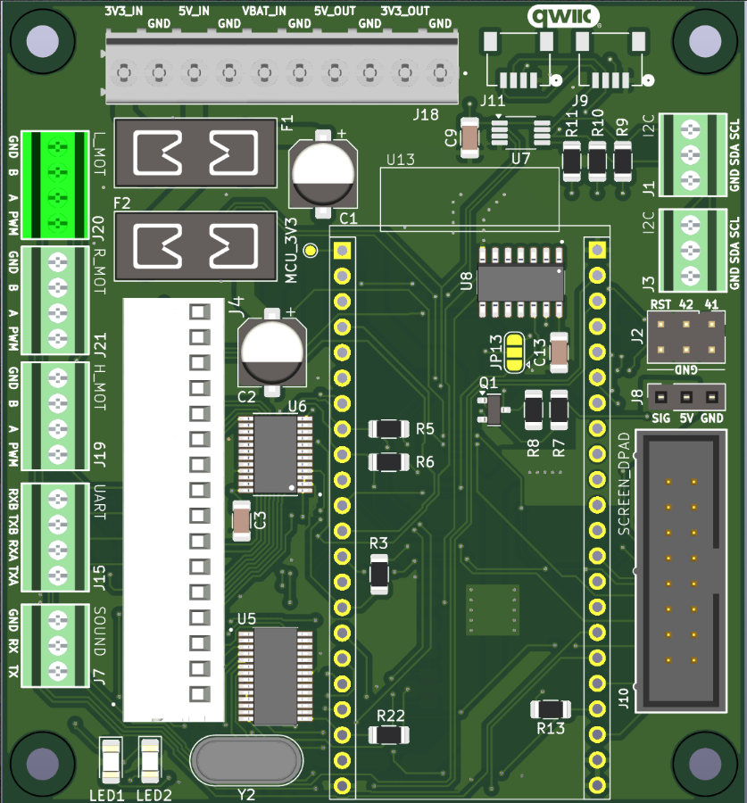
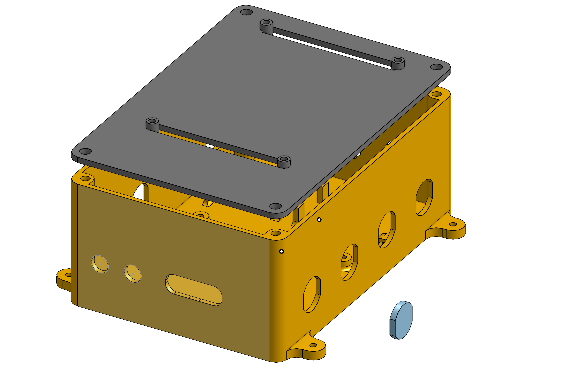
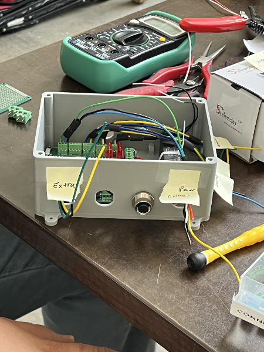

Astromech Droid Controller

The Astromech Droid Controller project involved the design, assembly, and integration of a custom controller for the Cal Poly Robotics Club's Astromech unit. My work focused on enclosure design, codebase integration, and PCB collaboration.
Project Overview
- Designed a robust main controller board integrating power, motor, and telemetry subsystems.
- Led the enclosure design process, ensuring functional, user-friendly housing and easy maintenance.
- Integrated legacy code for motor decoders and RC interface on ESP32 using C++.
- Collaborated on PCB schematic/layout decisions with attention to expansion capability.
PCB Design Highlights
- Custom ESP32-S3-based PCB designed in KiCad for minimal size and vibration resistance.
- Key features:
- Onboard 3.3V/5V regulators, fuses, and bypass jumpers
- All ESP32 pins exposed for future expansion
- I2C, UART, PWM, ADC, IO expander, quadrature decoder, and screen/Dpad connectivity
- Robust connectors, terminal blocks, and mounting holes
- Strategic USB-C port alignment for accessible enclosure mounting
-

Figure: Final PCB Top View
Enclosure Design Process
- Designed iteratively in OnShape with regular client feedback
- Optimized internal fit for PCB, screen, connectors, and cable management
-
Features:
- Mounting pillars for RC receiver and PCB
- Dedicated screen mount, cable management, and LED/connector accommodations
- External tabs for integration into the robot chassis
-

Figure: Final Enclosure CAD Design
My contribution: I led the enclosure design, collaborating closely with our professor and iterating based on feedback to meet all functional and space requirements.
Software Overview
- Object-oriented, modular code in Arduino/C++, compatible with legacy Astromech systems
- SBUS protocol processing for RC input (16 channels, robust failsafes and lost-frame handling)
- Custom classes:
- Motor_pwm_control: Converts SBUS values to PWM for motors, including acceleration smoothing and signal inversion
- ServoControl: Smooth dome and servo behavior with failsafes
- ScreenManager: Real-time display of system/channel status and error indications
- Source Code not available publicly due to project confidentiality.
Hardware Integration
- Rigorous connector specification, assembly, and testing (color-coded wiring, terminal blocks, electrical safety)
- Custom crimped screen connections for robustness
- PCB hardware inverter for SBUS UART compatibility
-

Figure: Connector Wiring Diagram
Challenges & Solutions
- Motor driver fault tolerance: Current sensing and auto-shutdown protocols
- SBUS implementation: Memory optimization via Arduino partition tuning
- Legacy code integration: Adapted motor/RC logic to ESP32; addressed channel mapping and interrupts
- Mechanical fit: Iterative enclosure redesign for usability and cable routing as per feedback
- Failsafes: Immediate neutral/center response on signal loss to prevent erratic robot behavior
My Role
- Led enclosure CAD development and client interactions in OnShape
- Collaborated on PCB layout decisions (component placement, USB access, test fit)
- Integrated legacy C++ control logic and debugged channel/interrupt management on ESP
- Documented testing results, maintained GitHub project updates